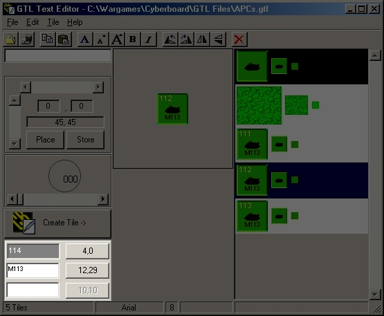

LOCATION:
The lower left of GTL Text Editor.
PURPOSE:
Allow the storing of individual text, font and location data for repeated use.
USE:
Text Position Data can be saved for future use - See File Menu.
Rapid creation of tiles can be aided by using the Text Position Data Buttons and having the "Create tile using position data" option selected in the Tile Menu. See Using Automation Features